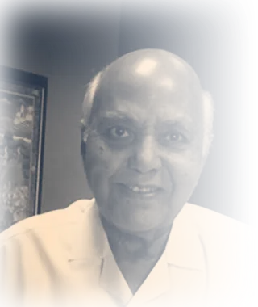

Everything grows from the roots.
Success is within you. And, within your reach.
World’s First, Kannadiga-invented YASHHO ensures you rise, progress, and succeed—scientific, stress-free, personalized.
One face, held
A single child looking straight at camera. Not a group, not a collage — the product is a person seeing a person.
The problem the world missed
Success is no more a miracle. It is not available in the stars. It is not luck. It is not an accident.
Everyone chases the outcomes. No one measures the drivers.
Marks are visible. Abilities are invisible. But invisible inner abilities drive visible performance. Through 14+ years of research, we identified and organised 64 Essential Success Abilities that drive learning, performance, careers, leadership, success and happiness.
ConcentrationDisciplineConfidenceCommunicationMemory
Decision-MakingSelf-RegulationProblem-SolvingMental Endurance
Leadershipand many more
We nurture the Success-Root
The world focuses on the fruit. We strengthen the root.
If the root is weak, the fruit suffers. If the root is strengthened, the fruit improves.
64 Essential Success Abilities
The YASHHO AACE64™ Framework. This is what we nurture.
Skills · Knowledge · Leadership · Personality
What grows once the underlying abilities are strong.
Performance
How it all carries through, day to day.
Marks · Ranks · Degrees · Careers · Success · Happiness
The visible results — the outcome, not the cause.
‹ swipe the journey ›
So the real question is: where is the common yardstick?
India’s children study under different systems, different boards, different schools, different exposure and different evaluation patterns. But every child enters the same battleground: National Exams · Global Careers · High-End Jobs · Competitive Success · Life Performance. Marks alone cannot identify the real ASLI CHAMPION across different systems.
Class 5–7 Marks BoosterClass 8–10 Board Exam BoosterNEET BoosterJEE BoosterIAS BoosterKAS BoosterCorporate Career Readiness Booster
24VS64
Marks is an outcome of just 24 abilities. Success is outcome of all 64 abilities. YASHHO™ deals with all 64 including marks-boosting 24.
A root does not strengthen itself. Every garden has a gardener — and ours has a name: the Yashodarshi.new
Personalised success science
One model fits all doesn’t work.
Every child is unique. Every student is unique. Every professional is unique. Yet the world follows the same syllabus, the same teaching, the same advice and the same expectations. That is precisely why so many struggle despite effort.
YASHHO follows a different approach — personalised success science. We scientifically identify what makes your child different, then provide a personalised success path and strengthening roadmap.
StrengthsGapsRisksOpportunitiesSuitable Pathways
The World’s First Success Doctor™ · why this exists
Fulfilling my mother’s dream.
My poor mother struggled and sacrificed a lot to raise me and build my career. Through several trials, errors and hardships, I fortunately did rise — as a Civil Services Officer, fulfilling my mother’s dream, and as Chief of India’s largest television news network, fulfilling my passion.
I resigned from a coveted position and comfortable life, endured tremendous hardships, and devoted over 14 years to researching what truly drives human success. On behalf of parents and children everywhere, I set out to discover the root cause behind marks, ranks, performance, careers, success and happiness.
Krishnaraj M Manjunath
Inventor & Founder, YASHHO™
Ex-Civil Services Officer · Ex-Chief, ETV News Network
Read the full story → (links to the live founder section; a dedicated /success-doctor page is proposed, not built)new
Founder portrait
One quiet, direct photograph. Warm light, no podium, no stage.
Real stories
Want to know what the journey really looks like?
Hear from students & parents across our community of 15,559.
Video — one full journey
One named student telling her own story, with her mother. The site has fifteen one-line quotes and no complete story — this is the missing film.
01
Where she startednew
Awaiting the real account. What her parents were worried about, and what she believed about herself.
02
What the scan foundnew
Awaiting her real scorecard. Her genuine strengths first, then what stands in their way.
03
Her first tasknew
In my very first task I overcame my fear. I asked my parents about their struggles, listened, and thanked them — it was a very happy moment. YASHHO made great changes in me.Nayana · Student · Shastry PU College, Hunsur
04
What her mother noticednew
Awaiting the real account. The small change at home that told the family something had shifted.
My daughter’s change after YASHHO was excellent. I request the team to give this opportunity not only to us, but to children from poor families too — they want this.Madhu R · Parent · Shastry School, Hunsur
An eye-opener. The tasks taught me to be empathetic, considerate and polite — and I could lower my aggression significantly. Thanks to the whole YASHHO team.Rajeshwari · Student · Shastry School, Hunsur
It strengthened my analytical reasoning and helped me break down complex governance issues. My answer-writing improved nearly 30%. Success needs decision-making, not rote learning alone.Nandini · IAS Aspirant · National IAS Academy
The sessions helped me express my thoughts and speak without fear. I noticed a real change in my communication and confidence — a great experience, personally and academically.Thanujashree · Student · Shastry PU College, Hunsur
Dedicated Success Mentor · 1-to-1 Mentoring
Meet your Yashodarshi.new
Yasho — glory, success. Darshi — one who sees. One who sees your glory before you can.new
Ongoing, daily strengthening — a dedicated mentor, accountability and parent partnership. They run the 21 tasks. They do the evaluation. They write the scorecard. Every Yashodarshi is trained through our Acharya Teachers’ Strengthening System — in the art of abilities scoring and mapping.new
Yashodarshi · name + photographWho she is, what she did before this, why she does it.
Yashodarshi · name + photographReal people, real faces. Three to begin with.
Yashodarshi · name + photographThis section is the whole point. It cannot be stock photography.
How they are chosento confirm — KMM
How they are trainedAcharya Teachers’ Strengthening System
Children per Yashodarshito confirm — KMM
Contact each weekto confirm — KMM
Because every child deserves a good parent. A Yashodarshi is that mother — made available to a child whose own cannot afford to be one.new
The Foundation 21-Task Success-Root System™
21 Personalized Exciting Tasks.
It starts with the Success Scan — a scientific measurement of your child’s abilities — and the ongoing GODPARENT guidance fits gently around school, so it never adds pressure.
A real taskadapted
Dear Teacher, With Love
Think of one teacher who changed something in you. Write them a handwritten thank-you letter — with one specific memory in it.
Submits a handwritten letter, 150–200 words
A real task
Neighborhood Detective
Go on a 10–15 minute observation walk in your neighbourhood. Identify three things you see every day but usually do not notice deeply.
Submits three photographs, each with a caption
A real task
My Everyday Role Model!
Choose one family member who inspires you the most — mother, father, grandparent, anyone. Speak to that person and ask them four questions.
Submits the interview and a written reflection
In my very first task I overcame my fear. I asked my parents about their struggles, listened, and thanked them — it was a very happy moment.Nayana · Student · Shastry PU College, Hunsur
The other eighteen include:
My Habit Transformation ChallengeBe the Buddy: Stop the Bully!Escape from the Forest
News Flash: Your Rule!Life Without Video GamesStay Safe Online: Smart Internet Habits
My Growth, My Next YearYour Fun Video Commentaryand ten more
Task titles and premises are drawn from the internal Foundation-21 briefs, not from yashho.com — reworded for a parent audience.
We will happily tell you what a task is. We will never publish the questions inside it — because a rehearsed answer measures nothing, and the whole point is to see your child as she actually is.new
Time each weekstate the real hours
Whereonline / in person
LanguageKannada · English
AgesFrom Class 5 onward
The system is designed from Class 5 onward — the stage where strengthening the Success-Root has the greatest long-term impact on academics, career clarity and emotional stability.
Where every journey begins · The YASHHO Success Scan™
630+ Ability Observations — recorded by your Yashodarshi.adapted
A scientific measurement that maps your child’s 64 success abilities, reveals the hidden gaps, and shows exactly what to strengthen. Your Yashodarshi signs it.new
AACE64 Success Scorecard · sample layout
Her own progress
Her strengths, first — always
Comprehensionstrength
Steadfastnessstrength
Attention to Detailstrength
What is in the way — and how far it has moved
Expression31 → 52
Confidence38 → 57
Illustrative layout only — figures are not a real child’s. She is measured against where she was, never against another child.
PHOTO
Signing the scorecard is a proposal, not an existing commitment — KMM to confirm.
Observed and scored by — name to comeYour Yashodarshi. You will know whose eyes were on your child.new
What the Success Scan reveals
- Hidden ability gaps become visible
- Parents gain deeper clarity about their child
- Scientific direction replaces confusion
- Career direction becomes clearer
- Foundational confidence begins to grow
The earlier the Success-Root is strengthened, the stronger and happier your child’s future becomes.Start Your Success Scan
◆ 6 Career Pathways · our unique standard ◆
We scan & strengthen your child for 6 career paths.
Whether your goal is marks, ranks, competitive exams, careers, leadership, employability or life success, YASHHO helps identify and strengthen the inner abilities that drive them.
+ NEET · Medicine
STEM Pathway™
◆ YASHHO Grooming Benchmark
Dr. A.P.J. Abdul Kalam
Medicine, Engineering, Science & Technology, Research.
Top 5 Essential Success Abilities
ConcentrationMemoryLogical ReasoningProblem SolvingMental Endurance
IAS–KAS / Government Leadership Pathway™
◆ YASHHO Grooming Benchmark
Ajit Doval
Civil Services, Public Leadership, Administration.
Top 5 Essential Success Abilities
Critical & Analytical ThinkingComprehensionWritten StructureDecision MakingSteadfastness
Corporate Leadership Pathway™
◆ YASHHO Grooming Benchmark
Sundar Pichai
Global corporate careers, MNC & technology leadership.
Top 5 Essential Success Abilities
ConfidenceProblem SolvingAdaptabilityEfficiencyFluency
Media • Creative • Law Pathway™
◆ YASHHO Grooming Benchmark
Ramoji Rao
Media, communication, creative industries, law & advocacy.

Top 5 Essential Success Abilities
ConfidenceArticulationCreativityExpressionOpen Mindedness
Entrepreneurship Pathway™
◆ YASHHO Grooming Benchmark
Steve Jobs
Startups, innovation, enterprise & business leadership.
Top 5 Essential Success Abilities
Decision-MakingLeadership AbilityPlanningProblem-SolvingCourage
CA • Finance • Banking Pathway™
◆ YASHHO Grooming Benchmark
Warren Buffett
Chartered Accountancy, finance, banking, investment.
Top 5 Essential Success Abilities
Attention to DetailLogical ReasoningConcentrationDisciplineComprehension
Aspirational grooming benchmarks — YASHHO is not affiliated with, or endorsed by, the individuals named.
The Success Doctor logic
We don’t promise specific marks or ranks — anyone who does is being dishonest.
Most systems try to improve marks through
more classesmore testsmore pressure
YASHHO
works at the root.
01
Scan
Identify hidden ability gaps
Through the Foundation 21-Task Success-Root System™.
02
Map
Map the child
Across the YASHHO™ AACE64™© Essential Success Abilities Framework©.
03
Benchmark
Compare ability levels
Against All-India Benchmarking & National/Global Superperformers’ 64 Success Abilities Benchmarks.
04
Strengthen
Focus consistently on all 64 Success Abilities
Through the Personalised Annual Success Strengthening System™.
05
Succeed
As the Success-Root strengthens
The child becomes more focused, confident, disciplined, emotionally steady, career-ready and performance-ready.
With one year of consistent focus
YASHHO™ scientifically strengthens your child’s Success-Readiness, Performance-Readiness and Outcome Potential — by minimum 2× & more.
Indicative of YASHHO’s scientific strengthening approach based on its proprietary AACE64™ framework and methodology; individual outcomes vary.
What we do
- ✓Scientifically strengthen the abilities that improve academic performance, confidence and clarity.
- ✓Track progress through the initial 64-ability scan, daily progress and happiness reports, personalised growth mapping, and national/global benchmark analysis — so you always see how your child is strengthening.
- ✓Working alongside (not replacing) your child’s school.
What we will not claim
- ✕We don’t promise specific marks or ranks — anyone who does is being dishonest. The outcome ranges we show are observed, not guaranteed, and depend on each child’s engagement.
- ✕We do not show you your child ranked against other people’s children. Benchmarks set what “strong” means; what you see is her own progress.adapted
- ✕YASHHO™ is not tuition, coaching, counselling or motivation.
- ✕Not a medical, diagnostic or healthcare service. “Success Doctor” is a brand expression.
Our offerings
Start with a scan. Grow with a guide.
Begin by measuring your child’s abilities — then strengthen them, day by day, with a dedicated mentor.
Most complete · 64 Success Abilities
ASLI64 Master Scan
₹4,999+18% GST at checkout
- 64 Success Abilities Measured
- 21 Personalized Exciting Tasks
- 6 hr Scientific Measurement
- 630+ Ability Observations
- 6 Career Pathways Mapped
- Dedicated Success Mentor (Yashodarshi) · 1-to-1 Mentoring
- AACE64 Success Scorecard
15 Essential Success Abilities
ASLI15 Focus Scan
₹1,999+18% GST at checkout
- 15 Success Abilities Measured
- 7 Personalized Exciting Tasks
- 90 min Scientific Measurement
- 105+ Ability Observations
- AACE15 Success Scorecard
5 Critical Success Abilities
ASLI5 Starter Scan
₹999+18% GST at checkout
- 5 Success Abilities Measured
- 7 Personalized Exciting Tasks
- 90 min Scientific Measurement
- 35+ Ability Observations
- AACE5 Success Scorecard
After the scan, what’s next? Meet your child’s GODPARENT.
Ongoing, daily strengthening — a dedicated mentor, accountability and parent partnership. Because every child deserves a good parent.
You begin with the YASHHO Success Scan — from ₹999 for a 5-ability measurement, ₹1,999 for 15 abilities, or ₹4,999 for the full 64-ability scan with career mapping and 1-to-1 mentoring. Ongoing GODPARENT guidance works out to about ₹82 a day — less than many tuition and coaching expenses. Roughly ₹30,000 across a year, plus 18% GST at checkout.adapted
Questions
Questions parents ask. Honest answers.
A student and her parent are not asking the same thing — and an adult is asking neither.new
Is this tuition or coaching?
No. YASHHO™ is not tuition, coaching, counselling or motivation. It is scientific success strengthening — we develop the 64 inner abilities behind confidence, clarity and capability, working alongside (not replacing) your child’s school.
Which age or class is it for?
The system is designed from Class 5 onward — the stage where strengthening the Success-Root has the greatest long-term impact on academics, career clarity and emotional stability.
How much time does my child need?
Very little. It starts with the Success Scan — a scientific measurement of your child’s abilities — and the ongoing GODPARENT guidance fits gently around school, so it never adds pressure.
What does it cost?
You begin with the YASHHO Success Scan — from ₹999 for a 5-ability measurement, ₹1,999 for 15 abilities, or ₹4,999 for the full 64-ability scan with career mapping and 1-to-1 mentoring. Ongoing GODPARENT guidance works out to about ₹82 a day — less than many tuition and coaching expenses.
Do you guarantee better marks?
We don’t promise specific marks or ranks — anyone who does is being dishonest. What we do is scientifically strengthen the abilities that improve academic performance, confidence and clarity. The outcome ranges we show are observed, not guaranteed, and depend on each child’s engagement.
How is my child’s progress tracked?
Through the initial 64-ability scan, daily progress and happiness reports, personalised growth mapping, and national/global benchmark analysis — so you always see how your child is strengthening.
Written for this draft — no original exists.new
Is this something being done to me?
No. Every task is yours to do, in your own life, and the scorecard is about you — not about your class rank. Nobody is being compared with you.
Will it tell me I am bad at things?
It leads with what you are genuinely strong at — most people are surprised by that part. Then it shows the one or two things standing in the way of those strengths.
Will my parents see everything?
Yes — they are part of this, and the honest version works better than a managed one.
How much time will it take away from studying?
Very little, and it is built to fit around school. Real weekly hours to be confirmed.
Written for this draft — no original exists.new
I am twenty-six and out of college. Is this for me?
Yes. Every professional is unique, and the abilities that decide a career are the same ones that decided school — they can still be measured and strengthened.
I am preparing for KAS or IAS. What does this add?
Aspirants tell us the difference shows in comprehension, written structure and decision-making under pressure — the parts coaching assumes you already have. Adult pathway detail to be confirmed.
I have a job and want to strengthen my core skills. Where do I start?
With the same scan, read against the Corporate Leadership Pathway rather than an exam. You get named strengths, what is holding them back, and a year with a Yashodarshi if you want one.
Will I be ranked against schoolchildren?
No. You are measured against where you were, not against anyone else.
It’s India and the Indians' Rise that drive YASHHO
One nation. Every child rising.adapted
Your child / you: Confident. Capable. Charming. Successful. Happy. That’s what the World’s First Success Doctor YASHHO excels in — and what thousands of students, parents and teachers who experienced YASHHO vouch for.
Face
Face
Face
Face
Face
Face
Many children, many districts — the same idea as the opening frame, at national scale.
Check your ability score. Strengthen your success core.
Jai Hind.new